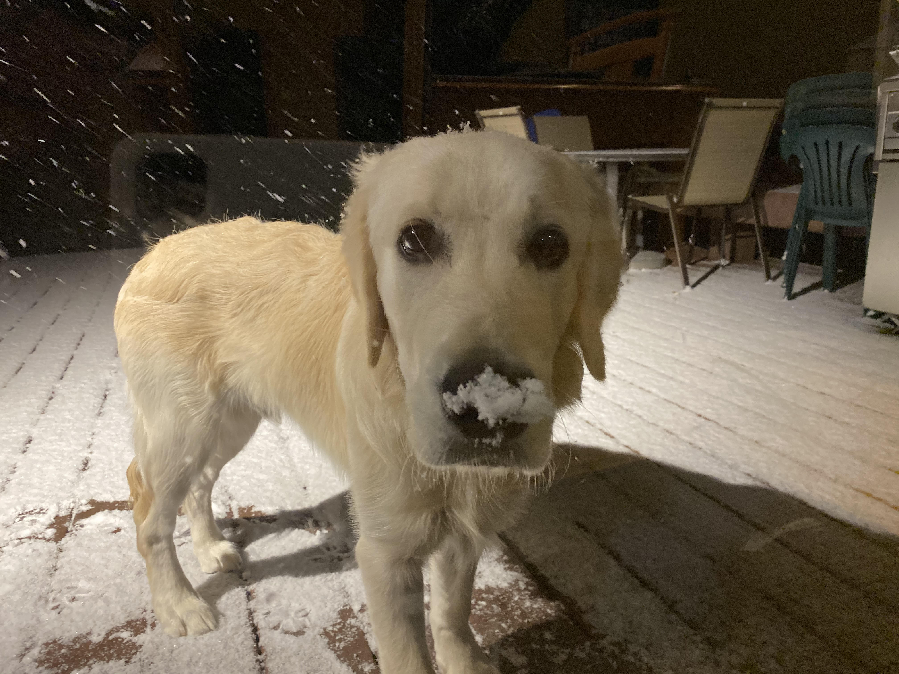
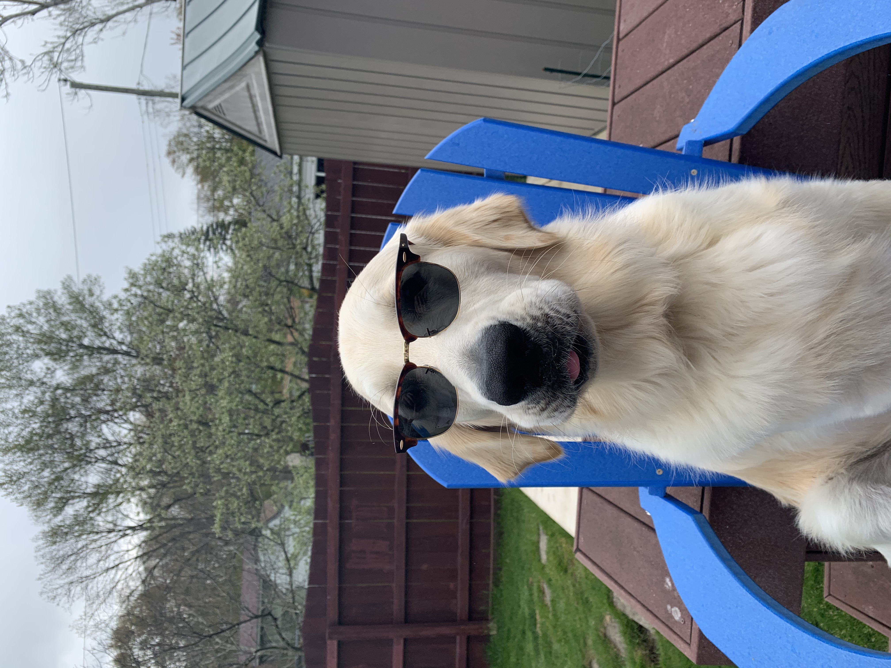
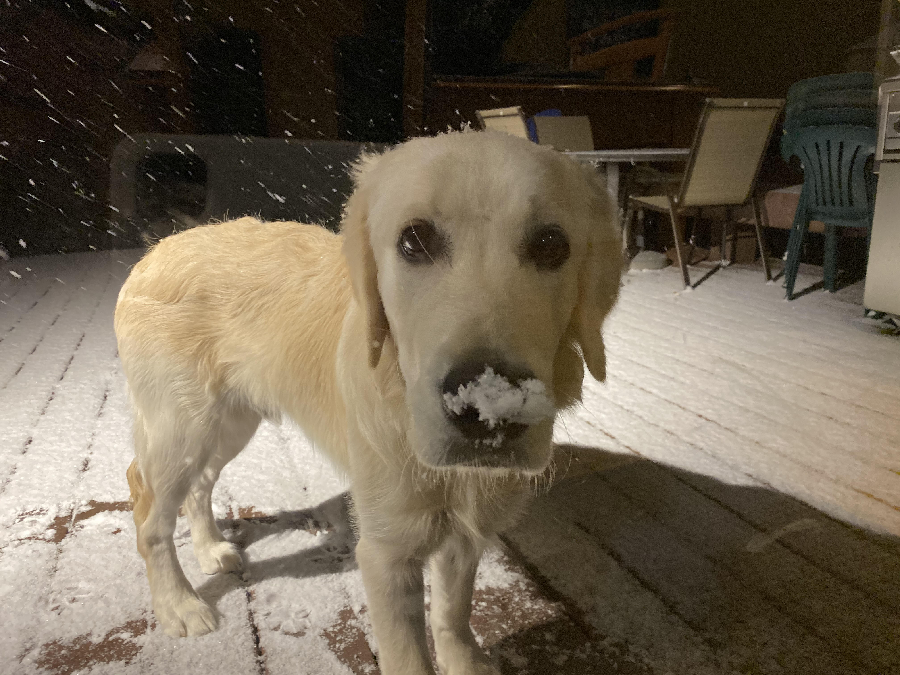
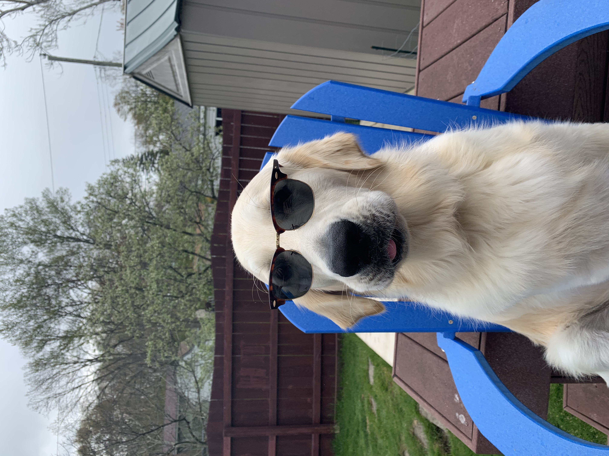
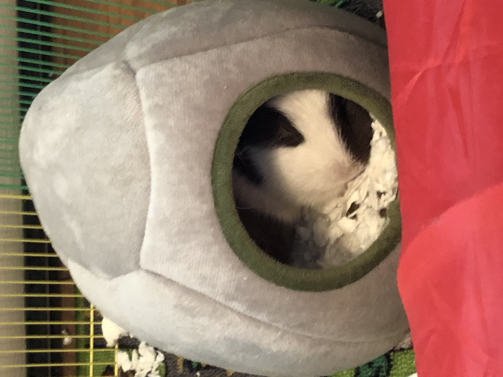
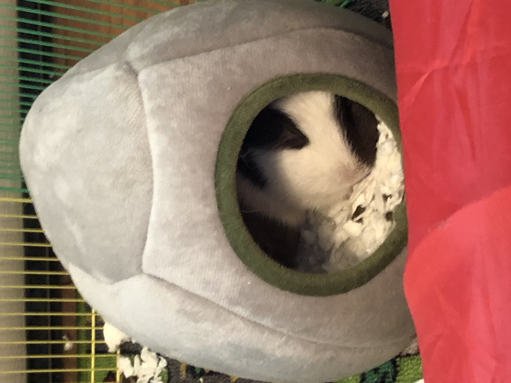

Bacon Q Dog

Bacon Q. Dog is a 9yr old labradoodle. He prefers to spend his days
lounging among the three different beds/couches that his family has
gifted him. He enjoys a walk or two around the neighborhood, as long
as he can pretend that he doesn't see any of the other animals to
avoid the embarrassment of not wanting to admit he has no wolf-like
skills in chasing them.
At night just as the rest of the
family is ready to relax, Bacon suddenly wants to release all of his
energy. He will place his toys on a mini couch and frantically drag
the couch around, giving his toys "a ride." There is also a lot of
rolling. Lots and lots of rolling.
Photo Gallery


Likes
- Belly rubs
- Playing tug-of-war
- Sneaking onto the couch
Finnigan
Finnigan is an English Cream Golden Retriever who was born on May
10th, 2019.
Finnigan can be stubborn sometimes but likes
to snuggle on the couch on a cold day and go for walks.
Photo Gallery
 



Likes
- Tug of war
- Long walks
- Soccer
Pluto

Pluto is a five year old rescue dog of an unknown breed. He was
found wandering alone and taken to the Valley Humane Society where
he found his new family. From a young age, Pluto always had a
special personality, he was known for being very very lazy! He
spends most of his time staring out the window to keep watch of his
house. Don’t let the laziness fool you because Pluto defends his
family from the mailman and squirrels every single day.
Aside from his job as defender of the house, Pluto likes to have
fun. Pluto’s favorite part of the day is his daily walk. Sometimes
he even gets to go to the park and meet his neighbors. He also loves
his toy duck, and only his toy duck. As a dog, it's in his nature to
hunt and so he makes sure to get some practice with his toy duck.
Photo Gallery


Likes
- Eating his bone
- Going to the beach
- His toy duck
Juno

No one knows exactly what breed Juno is, but that makes him all the
more special. He was adopted before he was one year old; despite
this and his German shepherd-esque looks, he stayed close to the
same size, hovering around 50 lbs into adulthood. At the weathered
age of ten years old, Juno is dealing with hip problems, but manages
to stay in good spirits.
One of Juno’s favorite pastimes
is finding the dirtiest puddle within a one-mile radius and making
sure every inch of him makes contact with said puddle. If rolling
around in dirt was an Olympic sport, Juno would have been the one
that facilitated its inclusion into the Olympics.
Photo Gallery


Likes
- Human food
- Head pats
- Sleeping
Lulu

Lulu is a lively guinea pig who enjoys eating carrots and peppers.
When not given any carrots or peppers she will squeak
Lulu
is very adventurous, she will explore her surroundings looking for
food and is not afraid.
Photo Gallery

 


Likes
- Peppers
- Carrots
- Sleeping